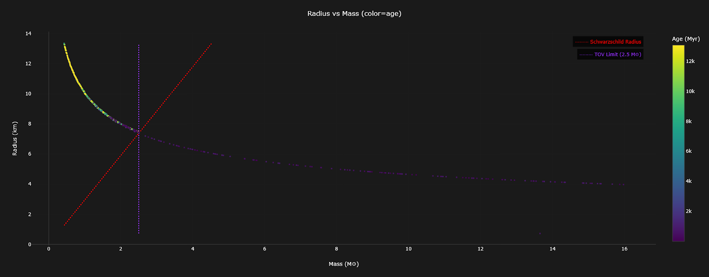
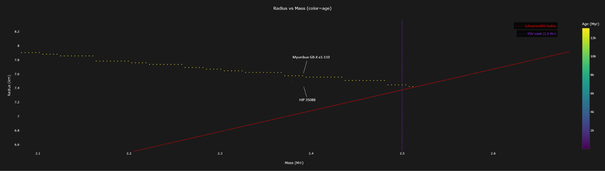
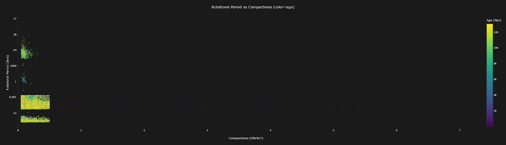
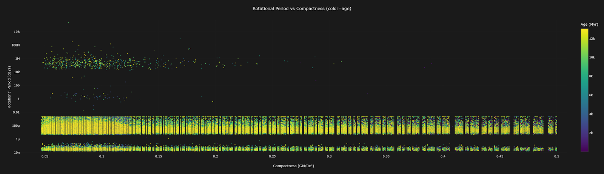
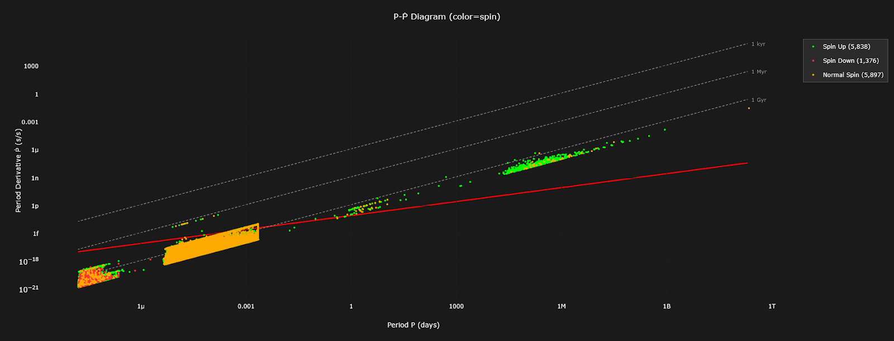
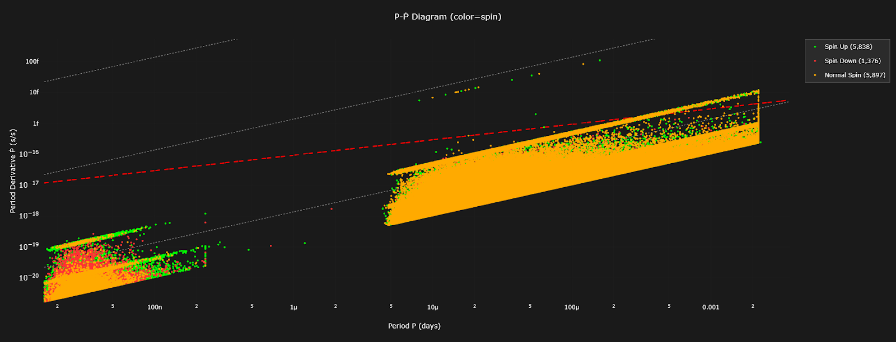
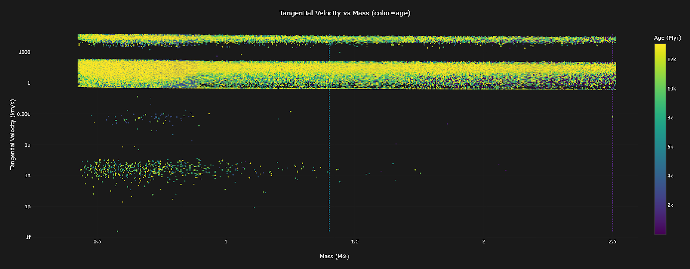
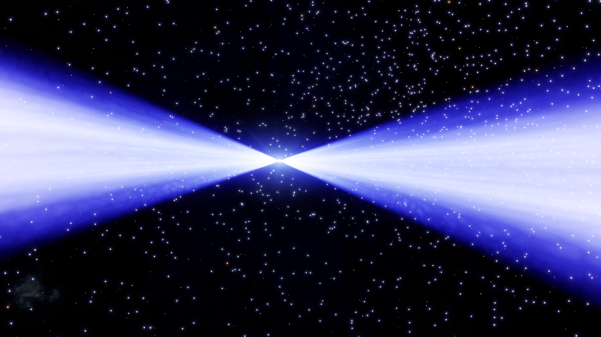
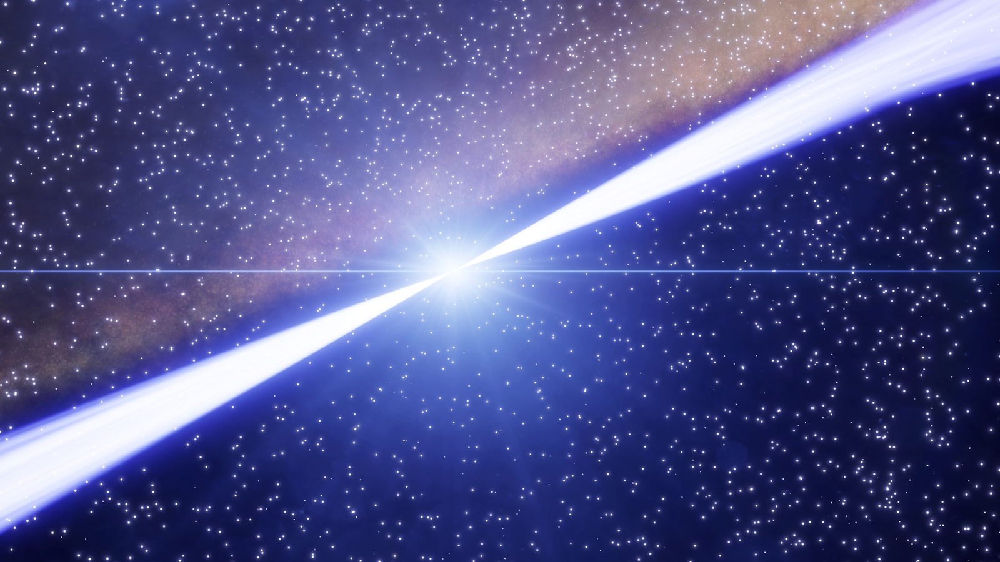

Back in the 20th and 21st centuries, if you wanted to visit a neutron star,you had to voyage there in your mind, transported there by mathematics and imagination. Scientists had to wait for faint radio and X-ray pulses, making the leisurely journey at the speed of light, to reach their primitive instruments. A journey that could take centuries.
As of the early 21st century, astronomers had catalogued only a few thousand neutron stars, most of them detected only because they emit regular pulses of radiation. But many thousands more were undetectable because their beams are not pointed in the direction of Sol.
The existence of neutron stars was first hypothesized in the 1930s by Walter Baade and Fritz Zwicky, soon after the neutron itself had been discovered, long before humanity could ever hope to visit one. They reasoned that supernovae required vast amounts of energy to power them and that only the gravitational collapse of a star, down to the point where protons and electrons would combine into neutrons, would provide sufficient energy to power a supernova.
In 1939 Tolman, Volkoff and Oppenheimer, yes that Oppenheimer, proposed the mass limit beyond which the neutron degeneracy pressure could not prevent further collapse. This was named the TOV limit and even after the limit was found to be incorrect the name stuck because by then people had already seen what Oppenheimer was capable of and were too afraid to change it in case they incurred his wrath.
Actual observational evidence didn’t come until 1967 when radio pulses were detected by Jocelyn Bell Burnell and Antony Hewish. They didn’t know what it was at first and named it LGM-1 joking that it was little green men. It was soon catalogued as PSR J1921+2153 by the astronomical union who had decided that LGM-1 was too silly. But in the 34th century Universal Cartographics sensibly decided that PSR J1921+2153 was a bit of a mouthful, so it can now be found on star maps with its original name, LGM-1.
It wasn’t possible to visit our closest neutron star until a team of engineers led by Li Qin Jao invented the first hyperdrive in the 22nd century. In the years since then over 3 million neutron stars have been visited and thousands more scanned every week.
The miracle of faster than light travel allows us to directly observe neutron stars and measure their properties in ways that primitive earthbound scientists could only dream off. Instead of making stuff up like those pencil pushers in their ivory towers, we can see it for ourselves.
Thanks to commanders uploading their data to the EDDN we are able to collate that data and investigate the properties.
The chart below plots the Neutrons Star’s mass and radius shown as a curved line. The chart shows some important limits. The Schwarzschild Radius denotes the combination of mass and radius that, if exceeded, would result in a black hole. The TOV limit indicates the maximum mass of a neutron star, beyond which the neutron degeneracy pressure would be exceeded and it would collapse into a black hole.
Even though we have plotted this as a scatter plot we are getting a curved line because the stars have achieved close to the maximum possible density. You will notice that the line hits the TOV limit at the Schwarzschild radius. This is as expected by 21st century scientists; however we can see that some neutron stars have sailed past the limits and stubbornly refuse to become black holes. Either those primitive 21st century scientists have got it wrong again. Or much less likely, the Pilot’s Federation software is glitching and supplying us with bad data.
One system in particular does not fit the curve at all. Nova Aquila No 3 is unfeasibly massive and has such a ridiculously small radius that it messes up all my lovely charts. The colonists who live there will certainly be surprised to know that it ought to be a black hole.
It is interesting to note that all of these limit busting neutron stars are very young and rebellious unlike their older peers who respect boundaries.

You might imagine that the curve is there naturally because it is the point at which neutrons can be maximally compressed, but when you look closely you can see that there are some stars within the bounds that drop below the line. Clearly there is some rounding that prevents a smooth line from being drawn but you can see some stars of equal mass have different radii.

As you can see HIP 35088 has an identical mass to Myumbue GB-X e1-110 and yet its radius is 1km smaller. This could be because of differences in composition. The inner core could contain exotic degenerate matter, such as:
Whatever it is, it will be dense. A single spoonful of the stuff would weigh more than a 2.5km long banana. Perhaps even as dense as what is widely considered to be the densest thing in the universe, Professor Perez of Orion University.
You might think that perhaps the rotational period might have an effect on compactness, but the extremes of gravity dominate, and it seems that the fastest spinning pulsars reaching tangential velocities of 0.19c are also some of the least compact neutron stars.
Once more the enemy of tidy charts Nova Aquila No 3, and its youthful friends, have pushed everything out of line, but we can see here that the majority of neutron stars fall below 0.5 GM/RC2 which is the limit beyond which black holes will form.

Ignoring the outliers, we can see more clearly that, if anything, slower periods correspond weakly to less compact objects. What might surprise those primitive astro-physicists is that the lower bound for compactness is much lower than they would have predicted. Anything below 0.1 would be considered very exotic. However they are still more compact than white dwarfs by an order of magnitude.

The P-Ṗ diagram is used to understand the evolution of neutron stars. P is the rotational period, Ṗ is the rate of change. Primitive astronomers would painstakingly measure tiny changes in the rotational period and plot the position on the diagram. Over time neutron stars reduce their spin through magnetic dipole radiation.
Unfortunately the Pilots Federation have seen fit to only provide telemetry with resolutions too low to measure the rate of change over useful timescales. But they have provided us with an age measurement. So we can derive the Ṗ value using the age of the star. It’s a bit back to front but seeing as we seem to have lost the ability to measure tiny increments in time with the same sort of accuracy those primitive scientists were used to, it’s the best we have got.
The red line on the chart shows the death line which is a theoretical boundary above which a pulsar will stop emitting radio waves. However the Ṗ value derived from the age does not take into account whether the pulsar might be accreting material from a companion star.
So we have categorised our stars based on whether they could be spinning up by accreting matter from a ring of material or nearby bodies, or spinning down because they are losing mass to a larger object like a black hole, or if they just have normal spin.
The spin derivative calculations are not rigorous and highly dependent on having accurate system body data but it does show a trend. The majority of stars that appear above the death line are likely to be spinning up and therefore if we could accurately measure their spin would not appear on a traditional P-Ṗ diagram from the 20th century.

20th century scientists deduced that neutron stars below the death line would not emit pulses and would not be visible. The radio pulsar death line is where the magnetic field and spin can no longer accelerate charged particles to produce coherent radio beams. Pulsars below the death line have too slow rotation or too weak fields to sustain pair cascades. They stop emitting radio pulses, but the neutron star still exists physically. They thought that to the naked eye a neutron star would appear black, essentially invisible if it was below the death line.
Oh boy, were they wrong! When we finally got to visit one of these slow rotators it had visible jets just like any other neutron star only they were thinner and you could still supercharge from them.
That said, for a neutron star like Eos Scraa AA-A h363 to have a rotational period of once every 610 million years, the star that it was created from, would have had to had no rotational period at all. The blasted thing can only have rotated 16 times in its entire lifetime!
If we remove some of the outliers that have exceptionally long rotational periods, they are very silly after all, we can make some interesting observations. There are some sharp boundaries between different populations of neutron stars. Millisecond pulsars with a rotational period between 1.39ms and 20ms, Then a very sparse region with just a handful of stars between 20ms and about 400ms. Then the region between 400ms and the 3.17 minute line.

The lower limit of 1.39ms is simply because no neutron star has ever been observed spinning any faster. Theoretically they could spin faster but that limit has held since the 20th century.
The 20ms boundary only consists of 38 neutron stars so it may just be the mind of a tired old researcher making connections where there aren’t any and in fact there are large gaps below 20ms which is not really unusual considering that normal pulsars are born from supernovae and spin down over millions of years. They populate the 10 ms to seconds range initially.
Recycled millisecond pulsars are spun up through binary accretion to much shorter periods between 1-30 ms. As they gain material from a companion star or the fallback ring of material from the supernova.
Because pulsars either spin down or spin up via accretion, their populations cluster in these separate regimes and this is why we see a gap.
The line at 3.17 minutes crosses the death line. But quite frankly we haven’t got a clue why it exists but it is very sharply defined with 7,898 neutron stars sharing that period. 3.16 minutes also has a large population of 3,183 stars. And no other rotational period has more than 131 stars sharing the same period. It’s almost certainly not random.
If we take the radius of a neutron star and its rotational period we can calculate the tangential velocity. In other words the speed you would be travelling if you were unlucky enough to make contact with the surface of a neutron star at the equator.
If it were a standard pulsar it could be anything up to 200km/s which is not all that fast. But if you were on one of the fastest spinning pulsars, like Byoi Eur GX-R d5-10, you would be travelling at 0.192c, a significant fraction of the speed of light.
Because mass and radius have a relationship that follows a curve you can see that the tangential velocity and mass have a slight curve when plotted. It’s really not all that interesting.

One of the actual, interesting things about the tangential velocity, is how it affects the width of the beams. The magnetic lines extend out beyond the radius of the neutron star but they are bound to the surface so they rotate with the star. The problem is that beyond a certain radius the magnetic lines can’t rotate with the star because they would have to exceed the speed of light. So the field lines open out into space. This speed-of-light limit, called the light cylinder, is what shapes the outer magnetosphere and where pulsar winds escape, to form that familiar cone that can supercharge your ship, or destroy it.
The faster the tangential velocity, the smaller the light-cylinder and the more magnetic fields lines have to open up. So you end up with a wider beam angle. Slower pulsars have a wider light-cylinder and a narrower beam.


So next time you jump to a spicy neutron star you can think about that!
Should you wish to explore the neutron star data, you can visit the site we have set up at Canonn-Plots. However I must warn you that you will need a very powerful computer, so don’t even bother trying to access it on a mobile communication device. It’s all a bit Heath Robinson and may have bit’s that dont work but when the chats are loaded you will be able to hover on any point and see the attributes of the Neutron start and click through to our signals page to see more details information.
The code is open source so you are welcome to take a copy and make your own charts from data and the source code or maybe you have a change you would lke to have us make.
This article and the software was inspired by Neutron Stars: The Quest to Understand the Zombies of the Cosmos by Katia Moskvitch. Not only will you read about the exploits of those hapless 20th and 21ist century astronomers as they grapple in the dark but she also tells you about their domestic arrangements!
You may also enjoy reading the following articles from those primitive 20th century scientists.
BBC The Sky at Night: Neutron Stars Explained
NASA: Neutron Stars are Weird
NASA: NASA’s NICER Probes the Squeezability of Neutron Stars